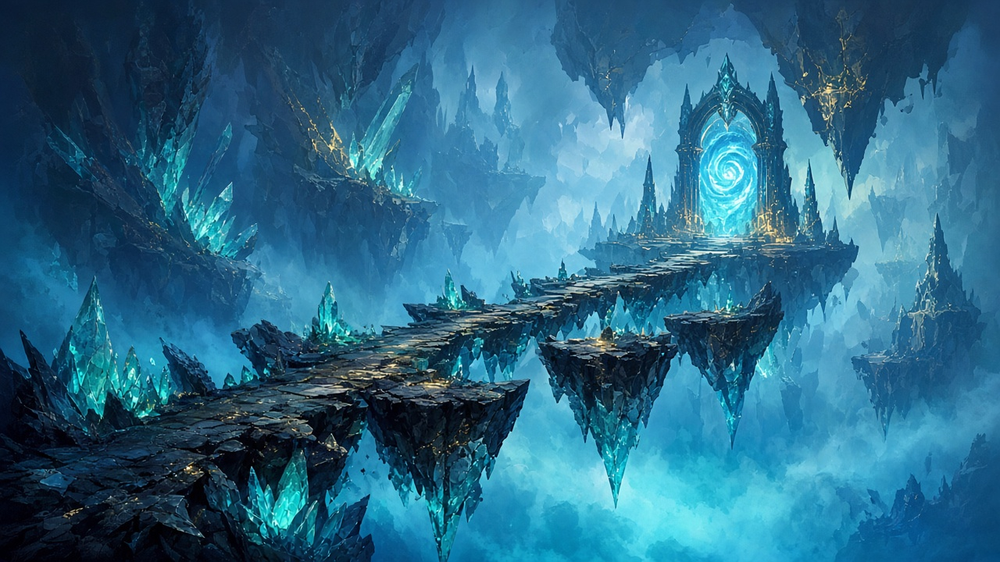

Fractal Skips
Browse and contribute crowd-sourced skip routes for Mistlock Sanctuary fractals. Tips will load from the database and update live as players submit new strategies.

Logged in as:
Placeholder — not logged in
Live updates
Placeholder — WebSocket live feed is not connected yet.
- Placeholder — realtime skip submissions and votes will appear here.
Submit a skip
Placeholder — submissions are not saved yet.
Skips from the database
Placeholder — no skip data is loaded yet. Stored fractal skips will appear in this table.
| Fractal | Skip | Submitted by | Votes |
|---|---|---|---|
| Placeholder — empty until database content is available | |||